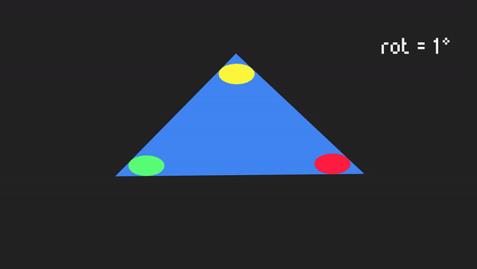
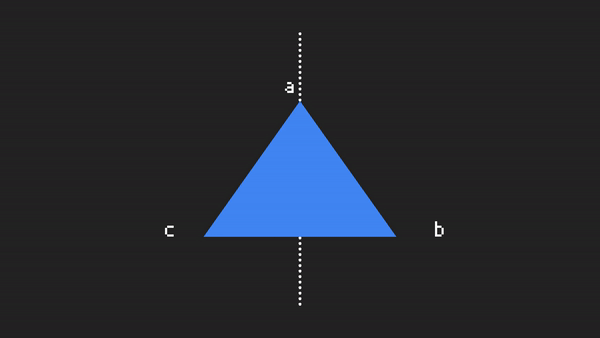
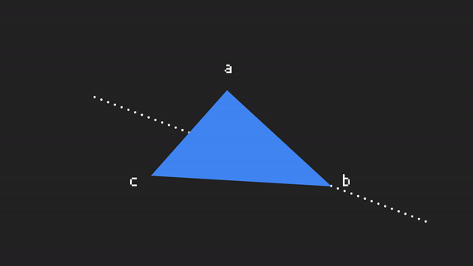
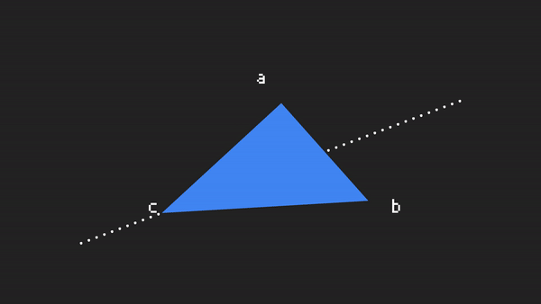

Introduction to Group Theory and Symmetry
Introduction to Group Theory and Symmetry
Sentences in different order with the same meaning and same images with different angles and scales are examples of variations that we, as humans, have no problem identifying. We have a powerful built-in pattern recognition system that allows us to do so. For computers we have a different story, they have an amazing capacity for speed of computation but their ability to understand the world and recognize patterns depends on the accuracy of the models we use to explain those patterns to them.
Artificial Neural Networks are the state of the art framework used to produce such accurate models and translate our reality to a language that a computer understands, astonishing accomplishments have been done in the fields of computer science and AI on this regard, but there is one concept that I think can change things around.
Group theory is one of the most powerful concepts out there, one of the reasons why this is so is that groups are the mathematician’s way of capturing symmetries, and symmetries are all around us.
If we take a look at the field of Physics we can see how powerful the principles of group theory and symmetries are, inside these principles we can find hidden secrets of the universe. If you don’t believe me let’s take out a ouija board and ask Emmy Noether, she found that for every symmetry existing in our universe there was a conserved quantity, this idea alone, opened the door to incredible demonstrations like the conservation of energy and momentum, for example. We can think of symmetries as a translation between the abstract machinery of mathematics into predictions about the behavior of the building blocks of our universe.
Symmetries are a central concept in understanding the laws of nature, it is widely used in physics, mathematics, chemistry and other fields but for some reason one does not find many algorithms using these ideas applied to machine learning in the wild as we probably should.
I found only a handful of examples of symmetry used in machine learning, one of them is Convolutional Neural Networks (which uses symmetry implicitly), but these concepts seem to me so powerful that I decided I wanted to explore them in the field of AI, but in order to do that we need to understand them first.
Let me introduce to you the concepts of groups and symmetry.
What is a Group?
You might be asking, what the heck is a group? well, maybe I should start by telling you about Abstract Algebra, abstract algebra is the study of mathematical objects and their structures, one of those being… groups.
A group is a set G of elements which one can perform actions to following a certain number of rules or axioms.
What we call “action” is a binary operation that we apply to an element, and the axioms they obey are the following.
- 1. For any x, y ∈ G, xy is also an element of G (closure).
- 2. For any x, y, z ∈ G, (xy)z = x(yz) (associativity).
- 3. There is a unique element of G, denoted e, and called the identity element, for which e*x = x*e = x for any x ∈ G.
- 4. For any x ∈ G there is a corresponding element 1/x ∈ G, called the inverse of x, which satisfies x*(1/x) = (1/x)*x = e.
Ok, that is a mouthful for a description of a group, but let’s translate that to english.
First let me give you a trick I used when I started to read about groups. A pair of groups that we use all the time is the group of addition of real numbers and the group of multiplication of positive real numbers. Yes, I know it is weird to look at addition, multiplication and numbers as a group, but believe me it’s going to be useful (and powerful) to think of them in that way.
Let’s use this groups together to verify each step of the explanation, ok?.
FYI, real numbers are numbers from -infinity to +infinity, including integers, rational numbers and irrational numbers.
Set of elements
What I mean by “a set of elements” is just a collection of items like numbers, {1, 2, 3, 4} or {15, -20, 98, 465}. Maybe they don’t have to be numbers they can be geometrical figures like squares and triangles or they can be letters {A, B, C, D} or a set of functions {f(x), g(y), L(x,y,t)} or matrices. A set can be pretty much anything you can think of.
Binary Operation
A binary operation is basically a procedure or an action that takes two elements of the set and combines them in some way.
For example, in the case of real numbers, a binary operation would be an addition or a multiplication. But it can be something more abstract than that, like applying a function to another one, or translating and rotating an object.
I have to mention that binary operations are not always commutative. For example in the case of real numbers, if we multiply or add two numbers the result is the same as if we execute the same operation in different order, real numbers operations are commutative, but that is not always true for other types of groups, one example for that are matrices operations.
Axioms
Ok, now Axioms, this ones are the central part of the puzzle. In order to actually have a group, our set of elements and our actions need to follow a set of rules.
An axiom is something we take as true, in order to move forward on anything we are studying, they also follow a logical structure and allow us to deduce other chunks of information.
There are four axioms that we need to satisfy to form a group.
The first one is closure, this axiom basically says that for every action or binary operation that we apply to our items, the result should be another element of our set of items.
If we take a look at real numbers we can see that if we multiply two numbers of our group of real numbers, we get as a result another real number:
- 2*3=6, 456*123=56088, 11*5=55.
On the other hand, if we look at a set like this one set={2, 3, 4}, we can see that applying an action such as multiplication between them would yield a number outside of the set, therefore the set can not be considered a group.
The second one is associativity. Association is the property related to grouping actions, for example if we add up three numbers, we can group them in different ways:
- 1 + 2 + 3 = (1+2)+3= 1+(2+3).
In the case of multiplication we can have:
- 1*2*3 = 1*(2*3) = (1*2)*3.
The difference with commutation is that we are not changing the order, we are only saying that we can group the operations in some ways without changing the order of application.
The next axiom is the Identity. Which states that for every element of our group we have another element that when applied in an operation will yield the same element. Another way to say it is that for every action we always have an element that will not make any change.
- For example the identity element of the group of real numbers in the realm of the action of multiplication is the number 1. Any number multiplied by 1 is the same number.
- In the realm of addition, the number 0 acts as an identity since when applied in an addition, does not make any change.
Finally, the inverse. For every element there is some other element, such that when combined, the result is the identity element.
A simple example in multiplication is:
- 2*½ = 1, ½ being the inverse of 2.
Another example on addition is:
- 3 + (-3) = 0. Being -3 the inverse of 3.
A Group of Symmetries
So far so good, now, there are a few things I didn’t tell you that I think we will make use of in order to follow the current section.
First one is that group theory is the study of the nature of symmetry, by now I think you already got that one.
Second one is that basically an action is a change on an object that leaves its fundamental properties unchanged, this is the key concept of symmetry and is also another way of phrasing the axiom of closure.
And the third one concerns the group of real numbers, which has a few details I want to discuss.
Under the action of multiplication the group is not really composed by all real numbers, the reason for that is because of the number 0. Zero does not have an inverse, it simply doesn’t exist so we would have to take 0 out of the group to make it consistent.
Under the action of addition, real numbers do form a group.
That being said we can note that real numbers, under the action of addition, are one of the most common symmetry groups out there and a set of real numbers under the action of multiplication, leaving 0 out, is also a very common symmetry group.
But let’s move forward to a practical example of symmetry.
Affine symmetry group
The affine symmetry group is composed by many actions, for example rotation, translation, reflection, scaling and others. But I like to explain things with examples so let’s take a look at a simple one.
We are going to use the simplest polygon… a triangle, in particular an equilateral triangle, and I want you to imagine we are playing with the famous toy of shapes and holes kids used to play with (at least kids who are probably old people today), and the goal is to find out how many ways we can fit our triangle into the hole. If it fits the hole, we can be sure that the transformation or the action we applied to the triangle is part of our symmetry group, since the result retains the properties necessary to make it fit (closure).
We are going to mark the vertices with colors so that we can keep track of the transformations.


We can start with rotations, if we rotate the triangle by 120° counterclockwise we get the same shape. We can call this action r (for rotation). If we do it by 240° we get also the same shape and we can call this action r². We can include the 360° or the 0° rotation and realize that we get exactly the same figure we started with, or the identity that we will call e. This showed that we have 3 ways to rotate an equilateral triangle to fit in the hole (3, since 0° and 360° are equivalent), one of them is the identity. You can also see that we made the rotations counterclockwise, which implies that the inverse of each rotation would be a rotation in the clockwise direction, giving as a result the identity shape.
Now let’s move on to reflections or flips under an axis.



We have 3 axis we can use to flip the triangle and get the shape to fit the hole let’s call them a, b, and c.
If we flip it under the a axis (Figure 3) we get the figure shown and we can call the action f (for flip).
Under the b (Figure 4) and c (Figure 5) axes we get those figures, but notice that those actions accomplish exactly the same result as applying rf and r²f to the identity. It is convenient to use that notation since flipping under different axes would require to add terms that we can avoid by using the ones we already have (f_b=rf and f_c=r²f).
We have checked for axioms of closure, identity and inverse of our group, but what about associativity? well, this would only apply to the case of r²f, and we can easily check that if we group the actions as r(rf) or (rr)f, the result still remains the same.
Great! that means we have a symmetry group, we can call it the symmetry group of the equilateral triangle, which is a subclass of an affine symmetry group since it is only composed by 3 rotational actions and 3 actions of reflections.
The 6 elements describing our group can be written as a combination of r and f, that we can see as our basic operators, each operator has an order or a maximum number of times we need to apply the operator to the shape in order to return to its identity. Think of the order of the symmetry as a number describing how simple or complex our symmetry group is. In the case of r, we can see that rotating the triangle 3 times (by 120°) gives us the identity, this means that the maximum order of r is 3 (r³). For our other operator, f, we would need to flip only twice in order to get the identity shape, hence, the order of f is 2 (f²).
I know I didn’t mention the order of an operator before, but they are an important feature of our symmetry groups and this is starting to give us a hint of the kind of information we can use in order to learn how to classify and identify patterns.
That is it for now…
I think that is a good introduction to the idea of groups and symmetries, hopefully you were able to see the beauty and usefulness of such concepts.
If you think about it, groups are giving us another point of view or another tool for describing common objects and structures, such as numbers and physical quantities.
The triangle example was constrained by the fact that we needed to fit the shape into the hole, but we can add more rules and set different constraints in order to fit some other criteria.
This simple idea is already giving us a feeling of how we can take advantage of the properties of symmetries to train machine learning models and detect shapes, sentences and objects with different patterns and constraints, under different types of actions.
I will attempt to describe to you the usage I have found in past and ongoing research related to AI and group theory on future articles, for now I’ll leave you with this, thanks for reading.
References
http://mathonline.wikidot.com/the-group-of-symmetries-of-the-equilateral-triangle
https://www.encyclopediaofmath.org/index.php/Affine_transformation
http://mathworld.wolfram.com/AffineTransformation.html
https://www.mathsisfun.com/geometry/symmetry-rotational.html
Project used for animations: https://github.com/jfreek/math_animations
Giphy channel:https://giphy.com/channel/jfreek